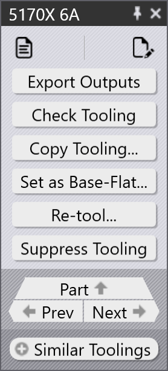
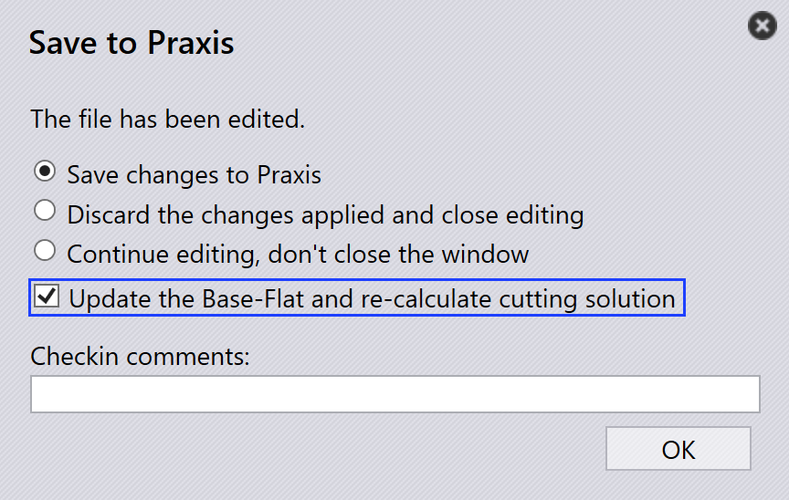

Takım paneli
Bu bölüm, takım örneklerini yönetmek için kullanılan Çıktıları Dışa Aktar, Check Tooling, Donatımı Bastır, Düz Temel olarak Ayarla…, Donatımı Kopyala… ve diğer seçenekler gibi takımla ilgili eylemleri açıklar.
 |
|


Çıktıları Dışa Aktar
Bu seçenek, parça çıktısını Fabrika Ayarları içinde yapılandırılan hedefe aktarır. (Bkz. Bend Settings ve Cut Settings)

Yalnızca seçilen takım işlemiyle ilişkili takımlar dışa aktarılır, tüm parça değil.
| Dışa aktarılan dosyalar işlem türüne bağlıdır. Bükme ve Katlama işlemleri için NC dosyaları ve raporlar oluşturulur. Kesme ve Zımba işlemleri için yalnızca parça dosyaları dışa aktarılır. |
Check Tooling
-
CAM Ayarlarında bir değişiklik varsa veya bir bükme takımı kaybolmuşsa, Parçayı Yeniden Takımlamaya gerek yoktur.
-
Bunun yerine, hiçbir değişiklik yapmadan mevcut takımlamayı doğrulamak için Takım Kontrolünü kullanın.
-
Doğrulama başarısız olursa, o örneğin takım durumu güncellenir ve ilgili çıktı dosyaları kaldırılır.
-
Takım Kontrolü ayrıca Hataları Yoksay kullanılarak daha önce manuel olarak geçersiz kılınan hataları olan parçaları algılar ve gerekirse durumlarını hataya günceller.

Donatımı Kopyala…
Kopyalama takımı, bir çözümden bükme takımını diğerlerine hızlı bir şekilde uygulamanza olanak tanıyarak zaman ve efor tasarrufu sağlar.
Bu, seçilen bir referans takımdan (çözüm) zımba, sıra ve arka dayama kurulumunu kopyalar ve aynı ayarları tüm diğer çözümlere uygulamaya çalışır.
-
Kopyalanan kurulum hedef makine için uygulanabilirse, kaydedilir ve kullanılır.
-
Kurulum uygulanamaz ise, o makine için orijinal takımlama değişmeden kalır.
Örneğin, farklı makineler için farklı takımlara sahip olabilirsiniz:
-
Burada, Makine 5230SX 6A bir Kaz Boynu zımbası kullanır, Makine 5085X 6A B23 Sivri bir zımba kullanır.

Makine 5230SX 6A üzerinde Donatımı Kopyala… kullandığınızda, Kaz Boynu kurulumunu tüm diğer makinelere kopyalamaya çalışır.

Aynı zımba, sıra ve arka dayama ayarları mümkün olan her yerde uygulanır. Kopyalanan kurulum kullanılamazsa, orijinal takımlama değişmeden kalır.

Kopyalama takımı uyguladıktan sonra, Kaz Boynu kurulumu uygulanabilir olduğu tüm diğer makinelere başarıyla uygulanmıştır.
Düz Temel olarak Ayarla…
Düz Temel olarak Ayarla… özelliği, kesme çözümleri oluşturmak için hangi bükme veya katlama takımının referans düz boyut olarak kullanılacağını tanımlar. Bir takım Base-Flat olarak işaretlendiğinde, TruSmartCAM parçanın düz boyutunu o makineye göre günceller ve kesme çözümlerini buna göre yeniden oluşturur. Base-Flat takımları kullanıcı arayüzünde mavi bir kenarlıkla gösterilir.
Farklı bükme makineleri aynı parça için düz boyutta hafif farklılıklar üretebilir. Bir takımı Base-Flat olarak ayarladığınızda, TruSmartCAM o makinenin düz boyutunu ana referans olarak kullanır ve kesme çözümlerini otomatik olarak yeniden hesaplar.
Burada, aynı parça için çeşitli makinelerde farklı düz boyutlar görebiliriz:

Bu örnekte, 5130X 6A B23 takımı Base-Flat olarak ayarlanmıştır ve güncellenmiş düz boyut parça özelliklerinde uygulanmıştır:

Otomatik base flat seçimi
Fabrika ayarı Büküm sırasında düzlük düzeltmesi uygula etkinleştirildiğinde:

-
TruSmartCAM, parça içe aktarma sırasında bükme takımını (maksimum bükme uzunluk tablosunu içeren) otomatik olarak Base-Flat olarak ayarlar.
-
Seçilen bükme takımı bir hatayla karşılaşırsa veya uygulanamaz ise, TruSmartCAM akıllıca geçiş yapar ve başka bir geçerli bükme takımını Base-Flat olarak ayarlar. Bu, manuel müdahale olmadan düz boyut referansının ve kesme çözümlerinin her zaman tutarlı ve geçerli kalmasını sağlar.
Gelişmiş base flat yönetimi
TruSmartCAM, bükme veya katlama takım düzenlemelerini kaydederken Praxis’e kaydet iletişim kutusunda Base-Flat seçenekleri sağlar. Bu seçenekler yalnızca Tamam durumundaki takımlar için görünür ve düz boyut ile kesme çözümlerinin doğru kalmasını sağlar.
Düz Temel olarak ayarla ve kesim çözümünü hesapla
Bu seçenek, ilk kez bir takımı Base-Flat olarak işaretlemek ve karşılık gelen kesme çözümünü otomatik olarak oluşturmak için kullanılır.
Görünür olduğu durumlar:
-
Takım şu anda Base-Flat olarak işaretlenmemiştir.
-
Kullanıcı düzenleme için takımı çıkış yapmıştır ve değişiklikleri kaydediyor.

Bu seçeneği kullanmak için, bükme veya katlama takımını çıkış yapın ve bükme parametreleri veya düz boyut gibi gerekli değişiklikleri yapın. Değişiklikleri kaydetmek için Ctrl+S tuşuna basın. Praxis’e kaydet iletişim kutusunda, Düz Temel olarak ayarla ve kesim çözümünü hesapla seçeneğini seçin ve Tamam seçeneğine tıklayın. TruSmartCAM, takımı Base-Flat olarak ayarlar ve güncellenmiş düz boyutu kullanarak kesme çözümünü oluşturur.
Düz Temeli güncelle ve kesim çözümünü yeniden hesapla
Bu seçenek, takım zaten Base-Flat olarak işaretlenmişken ve düzenlenmişken, düz boyut ve kesme çözümlerinin yeniden oluşturulması gerektiğinde kullanılır.
Görünür olduğu durumlar:
-
Takım zaten Base-Flat olarak işaretlenmiştir.
-
Kullanıcı bunu çıkış yapmış, düzenlemiş ve değişiklikleri kaydediyor.

Mevcut Base-Flat takımını düzenlerken, bükme parametrelerini veya düz boyut geometrisini gerektiği gibi güncelleyin. Praxis’e kaydet iletişim kutusunda, Düz Temeli güncelle ve kesim çözümünü yeniden hesapla seçeneğini seçin. TruSmartCAM, Base-Flat takımını güncelleyecek ve en son değişiklikleri yansıtmak için ilgili tüm kesme çözümlerini yeniden oluşturacaktır.
|
Aynı anda yalnızca bir bükme takımı Base-Flat olarak ayarlanabilir. Base-Flat değiştirildiğinde, mevcut kesme çözümleri otomatik olarak yeniden işlenir. Bu özellik TruSmartCAM içinde hem bükme hem de katlama takımları için kullanılabilir. |
Yeniden Donat…
Bu seçenek, parça için seçilen takımı yeniden işler.
Takım panelinde gerekli takıma sağ tıklayın ve Yeniden Donat… seçeneğine tıklayın

Devam etmeden önce bir onay iletişim kutusu görüntülenir.

Yeniden takımlama ile devam etmek için Evet seçeneğine veya işlemi iptal etmek için Hayır seçeneğine tıklayın.
Yalnızca seçilen takım yeniden takımlanır. Parçayla ilişkili diğer takımlar etkilenmez. Seçilen takımla ilgili mevcut çıktılar kaldırılır ve yeniden takımlama işlemi sırasında yeniden oluşturulur.
Takım verileri güncel değil, yanlış veya makine veya takım yapılandırmalarında değişiklik yapıldığında bu seçeneği kullanın.
Hataları Yoksay
-
Takımlı bir örnek bir uyarı gösteriyorsa ve yine de devam etmek istiyorsanız, Hataları Yoksay seçeneğine tıklayarak uyarıyı geçersiz kılabilirsiniz.

-
Bu, takım sorunları olsa bile sistemin o örnek için çıktı dosyalarını dışa aktarmasına izin verir.
| Hata Yok Say’yı yalnızca uyarının güvenle yok sayılabileceğinden emin olduğunuzda kullanın. Gerçek hataları geçersiz kılmak makine hasarına veya güvenlik risklerine yol açabilir. |
Takımı bastırma/bastırmayı kaldırma
-
Bir makine etkin olmadığında veya belirli bir parçanın belirli bir makine tarafından işlenmesini istemediğinizde, o parçayı o makinede yuvalamadan hariç tutmak için Donatımı Bastır kullanın.

-
Bastırdıktan sonra, fareyi takımlı örneğin üzerine getirdiğinizde şu gibi bir mesaj görüntülenir: "Tooling suppressed by <User name> on <Date Time>".
-
Takımı bastırmak, o makine ve parça için çıktı dosyasını kaldırır.
-
Parçanın o makinedeki takım durumunu geri yüklemek için Donatımı Bastırmayı İptal Et kullanın.

-
Bastırma kaldırıldığında, ilgili çıktı dosyası tekrar oluşturulur.